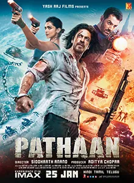

The genetics
The threat is a laboratory-made virus used for terrorism. Raktbeej, a mutated smallpox virus, is developed by a kidnapped scientist, Dr. Sahani, under coercion by Jim, a rogue former agent hired by a Pakistani general, who plans to release it in India unless its troops leave Kashmir. When the virus is released at an Indian institute for contagious diseases, where scientists hoped to develop a vaccine, it kills those inside, including the agent Nandini and, according to one source, the scientist Dr. Farooqui, and the building has to be destroyed. The scientists are presented as victims and heroes rather than villains: one is forced to work for the terrorists, the other dies trying to protect people. The film is an action spectacle in which the virus mainly raises the stakes. Smallpox was eradicated in 1980, and fear of its use as a bioweapon is real, but the film's virus is a plot device rather than an attempt at realism.
How genetics is portrayed
- Overall portrayal of genetics
- negative The engineered virus is a terrorist weapon; the scientists are victims, and science appears only as the source of the threat and a failed hope for a vaccine.
- Outcome of the genetic intervention
- negative The virus kills the people at the research institute, including Nandini, and threatens Delhi before Pathaan deactivates it.
- Jim and Outfit X
- villain Aim: revenge, military, commercial (negative). The rogue former agent, hired by a Pakistani general, kidnaps a scientist to have the virus made and releases it in an Indian research institute to blackmail India; Pathaan kills him.
- Dr. Sahani
- neutral Aim: not stated (not applicable). The kidnapped scientist develops the mutated smallpox virus under Jim's orders; the film presents him as a coerced victim rather than as a villain.
The story
In this Hindi spy thriller from the YRF Spy Universe, a cancer-ridden Pakistani general, General Qadir, hires the private terrorist group Outfit X to take revenge on India after it revokes Kashmir's special status. The Indian agent Pathaan, with his superior Nandini Grewal, runs a unit of sidelined agents. In Dubai, he finds that Outfit X's real targets are two scientists; he saves Dr. Farooqui, but the group's leader, Jim, an embittered former Indian agent, abducts Dr. Sahani. The trail leads to Raktbeej, which the Pakistani former agent Rubai reveals to be a mutated smallpox virus developed by Sahani under Jim's orders. Pathaan recovers one container of it from Jim's laboratory in Siberia, but when it is opened at an Indian institute for contagious diseases it turns out the virus has already been released there, and the building is destroyed with Nandini inside. Jim demands India withdraw its troops from Kashmir. Pathaan stops the virus aboard a plane approaching Delhi and kills Jim.